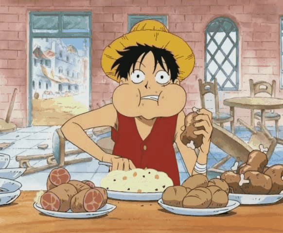
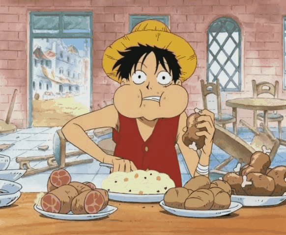

ＭＹ ＨＯＢＢＩＥＳ
This are my top 5 hobbies, first is READING BOOKS, MANGAS AND MANHWA second PLAYING ONLINE GAMES, third, WATCHING ANIME AND MOVIES,
fourt COOKING, and last but not the least,EATING. This hobbies help's me to cope with my stress and feel the freedom of the world. I can feel the enjoyment and happiness
while doing this things, this is the things that i do to rest and relax. No need to be always serious, sometimes all you just need to do is to rest and enjoy the things that makes you happy.